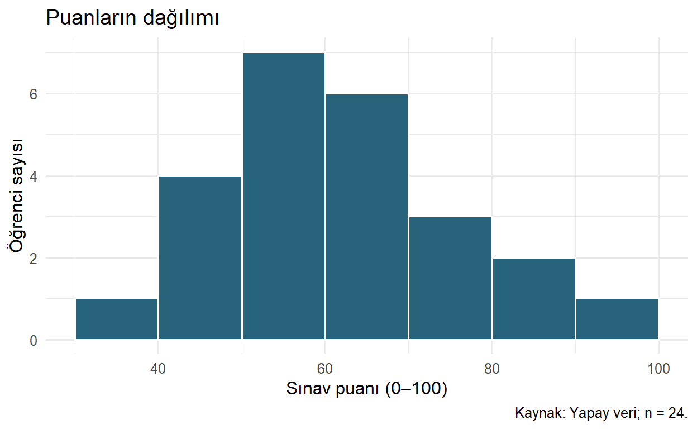
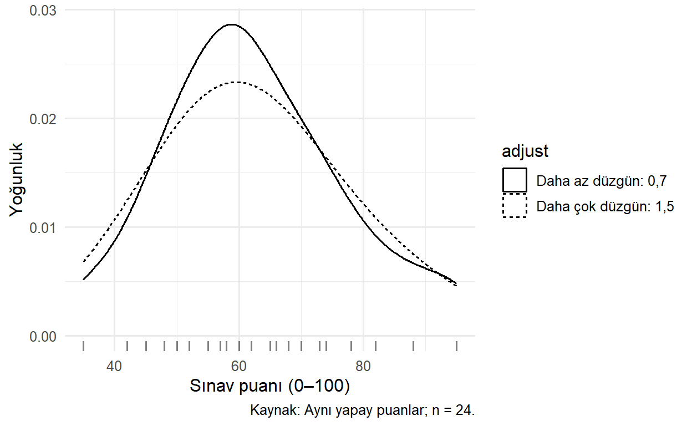
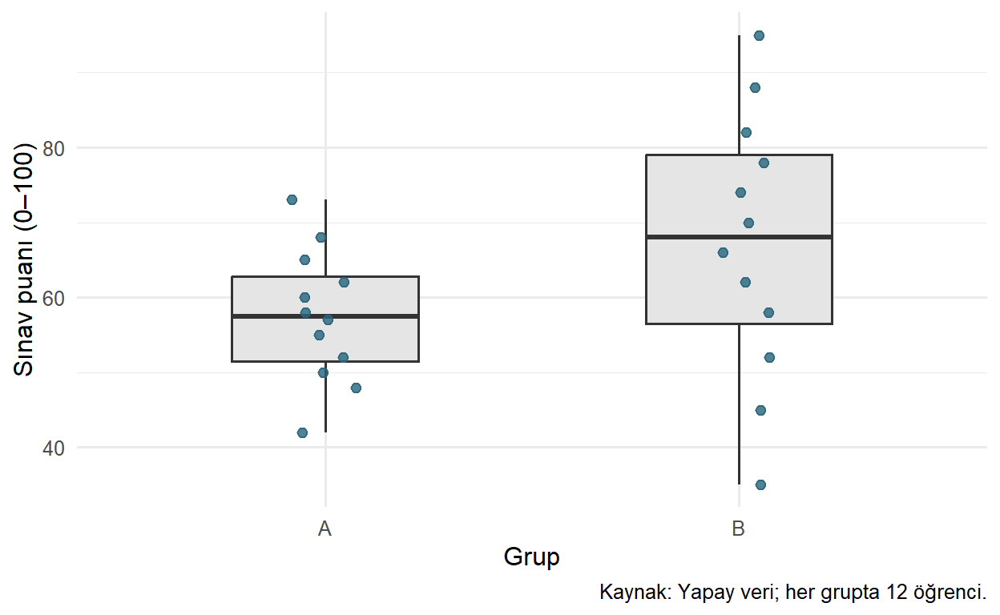
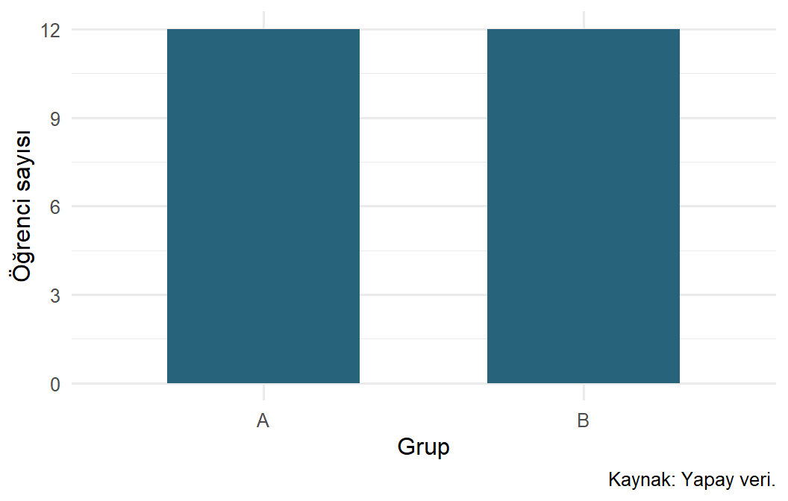
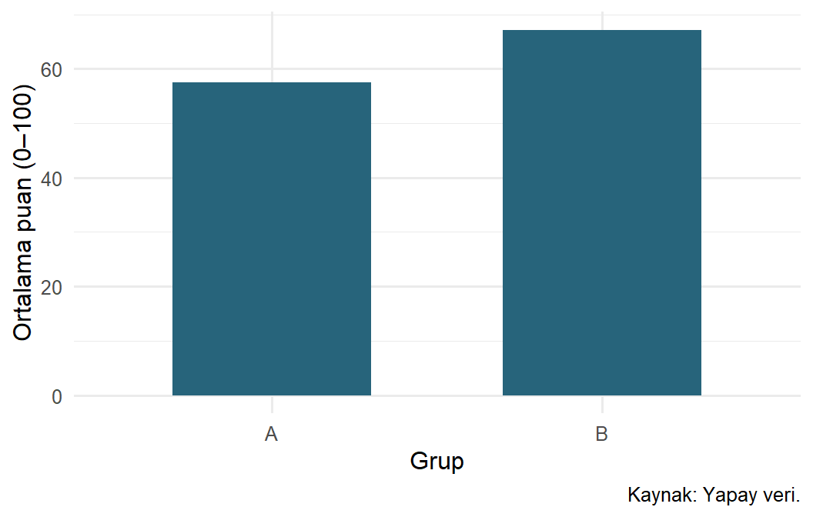
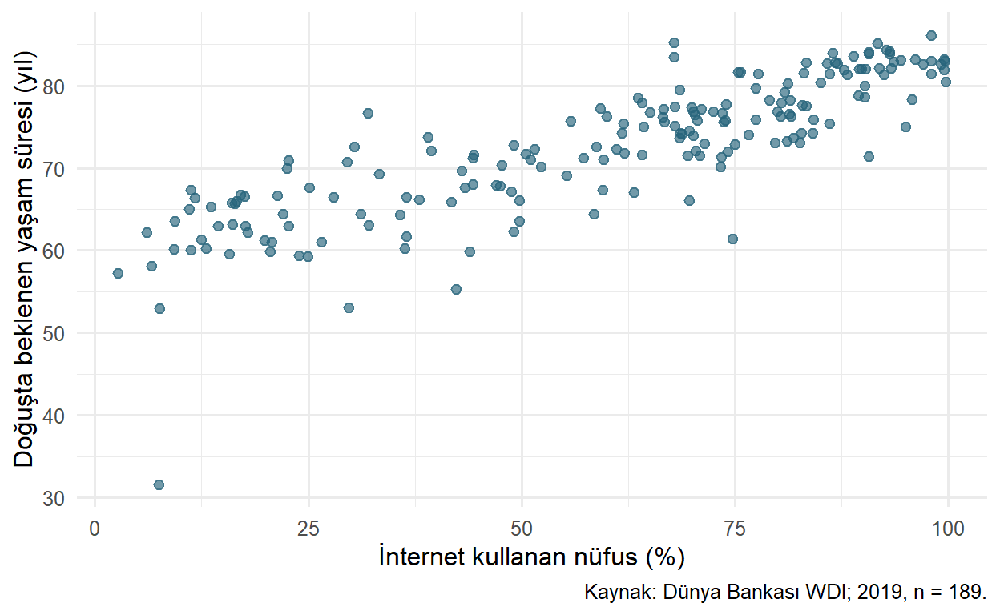
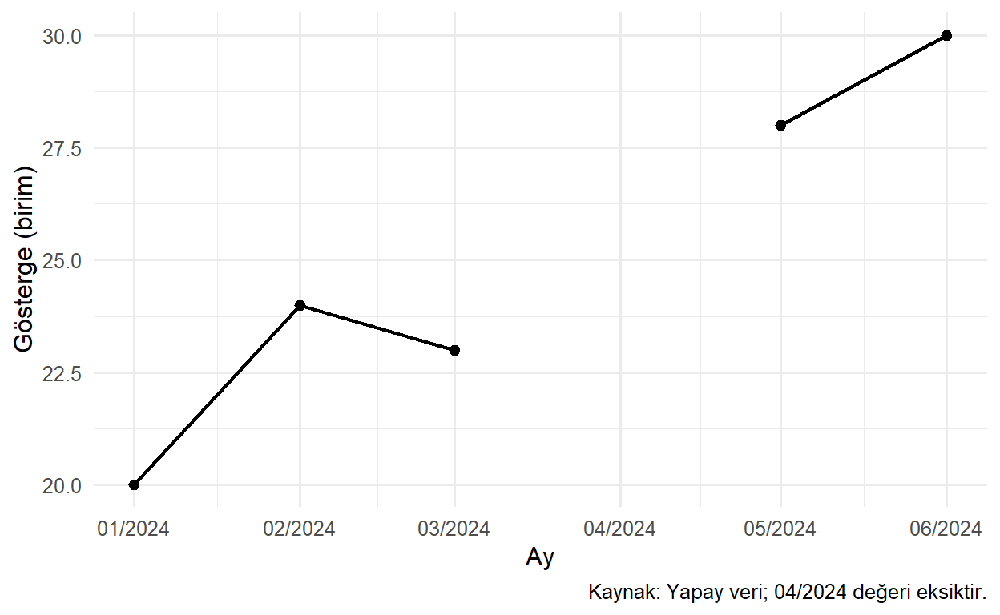

library(ggplot2)
puanlar <- data.frame(
grup = rep(c("A", "B"), each = 12),
puan = c(42, 48, 50, 52, 55, 57, 58, 60, 62, 65, 68, 73,
35, 45, 52, 58, 62, 66, 70, 74, 78, 82, 88, 95)
)
countries <- readr::read_csv("data/countries.csv", show_col_types = FALSE)23 Grafik Türleri
Bir geometri seçmek, hangi bilgiyi görünür kılacağımıza karar vermektir. Histogram dağılımı aralıklara ayırır; kutu grafiği dağılımı birkaç özete indirger; saçılım grafiği gözlemler arasındaki ilişkiyi gösterir. Aynı veri için birkaç doğru gösterim bulunabilir, fakat bunların cevapladıkları sorular aynı olmayabilir.
Bölüm 22 bölümündeki veri–eşleme–geometri yapısını şimdi farklı sorularda kullanacağız. Her grafikte önce neyi öğrenmek istediğimizi, ardından geometriyi ve onun önemli argümanlarını ele alacağız (Wickham 2016; ggplot2, t.y.).
23.1 Öğrenme Hedefleri ve Ön Koşullar
Bu bölümün sonunda dağılım, karşılaştırma, ilişki ve zaman sorularına uygun grafik seçebilecek; geom_bar() ile geom_col() farkını açıklayabilecek; histogram aralıklarının, yoğunluk düzgünleştirmesinin ve kutu özetlerinin yoruma etkisini değerlendirebileceksiniz. ggplot(), aes(), katmanlar ve temel veri süzme işlemleri ön koşuldur.
23.2 Veriyi Hazırlamak ve Kapsamı Belirtmek
Dağılım örneklerinde küçük yapay puan verisi; ilişki örneğinde kitabın 2019 WDI kesiti kullanılacak. Bütün veri hazırlığı bu bölümde yapılır; önceki bölümdeki R nesnelerine ihtiyaç yoktur.
Puanlar 0–100 ölçeğinde yapay ölçümlerdir. Her grupta 12 öğrenci bulunur. WDI verisindeki her satır ise bir ülke veya ekonomidir (World Bank 2026). Bu iki veri setinin analiz birimleri farklıdır; örnekler arasında yorum düzeyini değiştirmemeliyiz.
23.3 Dağılımı İncelemek: Histogram
Sorumuz: Puanlar hangi aralıklarda toplanıyor? geom_histogram() sayısal ekseni aralıklara böler ve her aralıktaki gözlemleri sayar. Sütunların bitişik olması, ayrı kategorileri değil sayısal aralıkları temsil ettiklerini hatırlatır.
p_hist <- ggplot(puanlar, aes(x = puan)) +
geom_histogram(binwidth = 10, boundary = 0,
fill = "#27647B", colour = "white") +
labs(
title = "Puanların dağılımı", x = "Sınav puanı (0–100)",
y = "Öğrenci sayısı", caption = "Kaynak: Yapay veri; n = 24."
) +
theme_minimal(base_size = 12)
p_hist
binwidth = 10 aralık genişliğini belirler. boundary = 0 sınırları 0’ın katlarıyla hizalar; dolgu fill, sütun sınırı colour ile ayarlanır. Alternatif olarak bins ile hedef aralık sayısı verilebilir. İkisini birlikte vermek yerine, ölçüm birimini bildiğimizde binwidth kullanmak daha açıklayıcı olabilir.
Şekil 23.1 tek tek puanları gizler. Az sayıda gözlemde histogram biçimi aralık seçimine duyarlıdır. 5 veya 20 puanlık genişlikle yeniden çizerek gördüğümüz örüntünün seçime dayanıklı olup olmadığını sorgulamalıyız. Görsel olarak belirgin iki tepe, tek başına iki ayrı anakütle bulunduğunu kanıtlamaz.
NotFrekans ve yoğunluk aynı dikey eksen değildir
Bu örnekte dikey eksen sayımdır ve aralıklar eşit genişliktedir. Eşit olmayan aralıklarda yükseklikleri doğrudan sayım olarak karşılaştırmak yanıltıcı olabilir; alanın anlamını koruyan yoğunluk gösterimi gerekir. Histogramın seçenekleri için resmî belgeye bakabilirsiniz.
23.4 Dağılımı Düzgünleştirmek: Yoğunluk Grafiği
Yoğunluk eğrisi, gözlemlerden hesaplanan düzgünleştirilmiş bir dağılım tahminidir. Ham veride bulunmayan ara konumlarda da değer gösterir. Bu nedenle ölçülmüş bir sıklık çizgisi olarak okunmamalıdır.
p_density <- ggplot(puanlar, aes(x = puan)) +
geom_density(aes(linetype = "Daha az düzgün: 0,7"), adjust = 0.7) +
geom_density(aes(linetype = "Daha çok düzgün: 1,5"), adjust = 1.5) +
geom_rug(alpha = 0.5) +
labs(x = "Sınav puanı (0–100)", y = "Yoğunluk", linetype = "adjust",
caption = "Kaynak: Aynı yapay puanlar; n = 24.") +
theme_minimal(base_size = 12)
p_density
adjust, seçilen bant genişliğini çarpar: küçük değer daha dalgalı, büyük değer daha düzgün bir eğri üretir. linetype sabit metinlere eşlenerek iki eğri için bir açıklama anahtarı oluşturulmuştur. Bu, önceki bölümde gördüğümüz sabit metni kategoriye eşlemenin bilinçli bir kullanımıdır. geom_rug() gözlemleri eksen kenarında kısa işaretlerle gösterir.
Bir yoğunluk değeri, tek bir puanın olasılığı değildir. Bir aralığa ait olasılık eğrinin o aralıktaki alanıyla ilişkilidir; her grup için ayrı hesaplanan yoğunluklar, varsayılan durumda grup büyüklüğünü doğrudan göstermez. Az veride, kesikli ölçümlerde veya 0–100 gibi sınırları bulunan değişkenlerde düzgünleştirme sınırların dışına da taşabilir. Bu küçük örneği bir “gerçek dağılım” keşfi olarak yorumlamayalım (Wilke 2019, böl. 7).
23.5 Grupların Dağılımları: Kutu Grafiği ve Ham Noktalar
Sorumuz: İki grubun merkezi ve yayılımı nasıl farklılaşıyor? Kutu grafiği bu karşılaştırmayı az yer kaplayarak yapar.
Kutunun iç çizgisi medyanı, alt ve üst kenarları alt ve üst çeyrekleri temsil eder. Çeyrekler arası aralık IQR = Q3 - Q1 biçimindedir. Varsayılan bıyıklar, çeyreklerden 1,5 IQR sınırları içinde kalan en uç gözlemlere uzanır. Sınırın ötesindeki noktalar ayrıca işaretlenir; bunlar otomatik olarak hata değildir (Tukey 1977).
p_box <- ggplot(puanlar, aes(x = grup, y = puan)) +
geom_boxplot(width = 0.45, outlier.shape = NA, fill = "grey90") +
geom_point(
position = position_jitter(width = 0.08, height = 0, seed = 17),
alpha = 0.8, size = 2, colour = "#27647B"
) +
labs(x = "Grup", y = "Sınav puanı (0–100)",
caption = "Kaynak: Yapay veri; her grupta 12 öğrenci.") +
theme_minimal(base_size = 12)
p_box
width kutu genişliğini ayarlar. outlier.shape = NA yalnızca kutu katmanının uç nokta işaretlerini gizler; veriyi silmez. Bütün gözlemleri ikinci katmanda çizdiğimiz için aynı noktayı iki kez göstermemiş oluruz. position_jitter() örtüşmeyi azaltmak amacıyla yalnızca yatay konuma küçük bir kaydırma ekler. height = 0 puanları değiştirmez; seed kaydırmayı yeniden üretilebilir yapar.
Bu örnekte B’nin medyanı ve yayılımı daha yüksektir. Ancak kutular örneklem büyüklüğünü varsayılan genişlikleriyle kodlamaz. Küçük gruplarda çeyrek tahminleri kararsız olabilir ve farklı çeyrek hesaplama yöntemleri küçük farklar üretebilir. İki kutunun örtüşmesi veya ayrılması da tek başına bir hipotez testi değildir.
23.6 Kategorileri Saymak: geom_bar()
Bir tablodaki her satır bir öğrenci olduğunda “her grupta kaç öğrenci var?” sorusu bir sayım sorusudur. geom_bar() varsayılan olarak her kategorideki satırları sayar; dikey eksen için hazır bir sayı sütunu istemez.
p_count <- ggplot(puanlar, aes(x = grup)) +
geom_bar(width = 0.6, fill = "#27647B") +
scale_y_continuous(breaks = seq(0, 12, by = 3)) +
labs(x = "Grup", y = "Öğrenci sayısı", caption = "Kaynak: Yapay veri.") +
theme_minimal(base_size = 12)
p_count
Bu sütunlar puanı değil öğrenci sayısını gösterir. Her grupta 12 öğrenci olması başarıların aynı olduğu anlamına gelmez. Sayısal bir ölçümü kategoriymiş gibi geom_bar() ile saymak ise çoğu zaman asıl dağılım sorusunu yanıtlamaz.
23.7 Hazır Değerleri Karşılaştırmak: geom_col() ve Nokta Grafiği
Sorumuz: Grupların ortalama puanları kaçtır? Önce ortalamaları hesaplayıp sonra hazır değerleri çizeceğiz. geom_col() verideki y değerlerini sütun yüksekliği olarak kullanır; kendiliğinden ortalama hesaplamaz.
ozet <- puanlar |>
dplyr::group_by(grup) |>
dplyr::summarise(n = dplyr::n(), ortalama = mean(puan), .groups = "drop")
ozetn örneklem büyüklüğünü, ortalama çizilecek özeti kaydeder. Aynı kategori için birden fazla satır kalırsa geom_col() bunları varsayılan olarak üst üste yığabilir. Bu yüzden çizimden önce tablonun analiz birimini kontrol ederiz.
p_col <- ggplot(ozet, aes(x = grup, y = ortalama)) +
geom_col(width = 0.6, fill = "#27647B") +
labs(x = "Grup", y = "Ortalama puan (0–100)", caption = "Kaynak: Yapay veri.") +
theme_minimal(base_size = 12)
p_col
Sütun uzunluğu büyüklüğü temsil ettiği için sıfır başlangıcı korunur. Alternatif olarak geom_point() kullanıp aynı ortalamaları konumla gösterebiliriz. Çok sayıda kategori ve uzun adlar varsa yatay nokta grafiği yararlı olabilir. Her iki gösterim de ortalamanın belirsizliğini ve dağılımı tek başına vermez; ham veriyi gördüğümüz kutu ve nokta grafiği bu nedenle tamamlayıcıdır (Wilke 2019, böl. 6).
23.8 İki Sayısal Değişken: Saçılım Grafiği
Sorumuz: 2019 yılında internet kullanım oranı ile yaşam beklentisi nasıl ilişkilidir? Sayısal iki ölçüm için her ülkeyi bir nokta yapalım.
internet_yasam <- countries |>
dplyr::filter(year == 2019, !is.na(internet_users_pct),
!is.na(life_expectancy_total))
c(kullanilan = nrow(internet_yasam),
dislanan = nrow(countries) - nrow(internet_yasam))kullanilan dislanan
189 28 Mevcut kesitte 189 ülke/ekonomi çizilir, internet verisi eksik 28 kayıt dışlanır. Yaşam beklentisi yıl, internet kullanımı nüfusun yüzdesi birimindedir. Kayıp internet değerleri sıfır kabul edilmemiştir.
p_scatter <- ggplot(internet_yasam,
aes(x = internet_users_pct, y = life_expectancy_total)) +
geom_point(alpha = 0.65, size = 2, colour = "#27647B") +
labs(x = "İnternet kullanan nüfus (%)",
y = "Doğuşta beklenen yaşam süresi (yıl)",
caption = "Kaynak: Dünya Bankası WDI; 2019, n = 189.") +
theme_minimal(base_size = 12)
p_scatter
Genel örüntü pozitif yönlüdür; tek başına internet kullanımının yaşam süresini artırdığı sonucunu vermez. Gelir, eğitim ve sağlık altyapısı gibi başka etkenler iki ölçümle de ilişkili olabilir. Saydamlık, örtüşmeyi azaltır; yoğun bölgelerde kaç ülke bulunduğunu kesin okumak için tablo veya başka bir yoğunluk gösterimi gerekebilir.
23.8.1 Eğilim Çizgisi Bir Modeldir
Saçılım grafiğine geom_smooth() eklemek bir hesaplama ve modelleme kararıdır. Örneğin aşağıdaki nesne, doğrusal ortalama ilişkisini özetler; burada ayrıca çizdirmiyoruz.
p_dogrusal <- p_scatter +
geom_smooth(method = "lm", formula = y ~ x, se = TRUE, level = 0.95)method = "lm" doğrusal modeli, formula = y ~ x model formunu, se = TRUE tahmin edilen ortalama eğilimin belirsizlik bandını ister. level = 0.95 güven düzeyidir. Bant, ülkelerin yüzde 95’inin içinde bulunacağı aralık değildir. Model varsayımları ve veri yapısı uygun değilse çizgi ve bant da güvenilir bir çıkarım sağlamaz. Doğrusal olmayan bir örüntüyü zorla doğruya indirgememeliyiz (Gelman vd. 2020).
23.9 Zaman İçindeki Değişim: Çizgi Grafiği
Çizgi, noktalar arasında bir bağlantı olduğunu ima eder. Bu yüzden zaman gibi anlamlı bir sıralama bulunduğunda kullanılır. Birbirinden bağımsız ülkeleri ad sırasıyla bağlamak çoğu zaman anlamlı değildir.
Eksik bir ayın nasıl gösterileceğini küçük bir yapay seriyle görelim:
aylik <- data.frame(
ay = seq(as.Date("2024-01-01"), by = "month", length.out = 6),
deger = c(20, 24, 23, NA, 28, 30)
)
p_time <- ggplot(aylik, aes(x = ay, y = deger)) +
geom_line(linewidth = 0.8) +
geom_point(size = 2, na.rm = TRUE) +
scale_x_date(date_breaks = "1 month", date_labels = "%m/%Y") +
labs(x = "Ay", y = "Gösterge (birim)",
caption = "Kaynak: Yapay veri; 04/2024 değeri eksiktir.") +
theme_minimal(base_size = 12)
p_time
geom_line() her grup içinde x sırasına göre bağlar. linewidth çizgi kalınlığıdır; noktalarda kullandığımız size ile karıştırmayalım. scale_x_date() tarih ekseninde işaret aralığını ve etiket biçimini belirler. Nokta katmanında na.rm = TRUE kullandık; çünkü eksik ayı önceden açıkça tanımlayıp açıklamada belirttik.
Eksik satırı tamamen silseydik mart ile mayıs doğrudan bağlanabilirdi. Bu, nisan için ölçüm yapıldığı anlamına gelmez. Gerçek panel verisinde olmayan ülke–yıl satırları ile bulunan satırdaki NA farklı durumlardır; çizimden önce ikisini de kontrol etmeliyiz.
23.10 Hangi Argüman Hangi Kararı Etkiler?
| Geometri | Önemli seçenek | Etkilediği karar |
|---|---|---|
geom_histogram() |
binwidth, boundary, bins |
Sayısal dağılımın aralıklara ayrılması |
geom_density() |
adjust, bw |
Dağılım tahmininin düzgünlüğü |
geom_boxplot() |
coef, width, outlier.shape |
Bıyık sınırı ve özetin görünümü |
geom_bar() |
position, width |
Sayımların yerleşimi ve sütun görünümü |
geom_col() |
position, width |
Hazır değerlerin yerleşimi; özet hesaplamaz |
geom_point() |
alpha, size, shape |
Noktaların okunması ve örtüşme |
geom_line() |
group, linewidth, linetype |
Hangi gözlemlerin bağlandığı ve çizgi görünümü |
geom_smooth() |
method, formula, se, level |
Model ve belirsizlik gösterimi |
group, eşlenebilen bir görsel gruplama özelliğidir; aes() içinde verilebilir. Bütün seçenekler yalnızca görünümü değiştirmez: aralık genişliği ve düzgünleştirme, görünen özeti de değiştirir.
23.11 Sık Yapılan Hatalar
- Sayım sorusuyla ortalama sorusunu karıştırmak.
- Varsayılan histogram aralıklarını sorgulamadan “iki tepe var” demek.
- Yoğunluk yüksekliğini kişi sayısı veya tek bir değerin olasılığı sanmak.
- Kutu grafiğinin uç noktalarını otomatik silmek.
- Ortalama sütunlarından dağılım veya istatistiksel anlamlılık çıkarmak.
- İlişki grafiğine gerekçesiz bir model eklemek veya çizgiyi nedensellik gibi okumak.
- Eksik dönemleri kaldırıp çizginin oluşan boşluğu atlamasına dikkat etmemek.
23.12 Egzersizler
- Kolay: Histogram ile kategori sütun grafiğinin yatay eksenleri neden farklı anlam taşır?
- Kolay: Elinizde
grupve önceden hesaplanmışogrenci_sayisisütunları varsa hangi geometri uygundur? - Orta: Puan histogramını 5 ve 20 puanlık genişlikle oluşturun. Hangi ayrıntılar değişiyor? Yeni veri üretilmiş oluyor mu?
- Orta:
ozettablosundaki ortalamaları yatay nokta grafiğiyle gösterin. Bunu kutu grafiğiyle hangi bakımdan tamamlamanız gerekir? - Orta: Yoğunluk eğrisindeki küçük bir tepe, küçük
adjustdeğeriyle belirginleşiyor ve büyük değerle kayboluyor. Nasıl yorumlarsınız? - Zor: Nisan satırını çıkaran zaman grafiği ile mevcut grafiğin farkını açıklayın. Boşluğu sıfırla doldurmak neden başka bir yanlış bilgi üretir?
- Zor:
p_dogrusalnesnesindeki güven bandını “ülkelerin yüzde 95’i bu aralıktadır” diye açıklayan yorumu düzeltin.
23.13 Egzersiz Çözümleri
Çözüm 1: Histogramın yatay ekseni nicel aralıkları, kategori grafiğinin ekseni ayrı sınıfları gösterir. Histogram aralık genişliğine duyarlıdır; kategorilerin genişliği sayısal bir aralık anlamına gelmez.
Çözüm 2: aes(x = grup, y = ogrenci_sayisi) ile geom_col() uygundur. Ham satırların sayılması istenmiyor; değerler zaten hesaplanmıştır.
Çözüm 3:
hist_5 <- ggplot(puanlar, aes(puan)) +
geom_histogram(binwidth = 5, boundary = 0)
hist_20 <- ggplot(puanlar, aes(puan)) +
geom_histogram(binwidth = 20, boundary = 0)Bu nesneleri ekrana yazdırarak karşılaştırabilirsiniz. Dar aralıklar yerel boşluk ve yığılmaları belirginleştirir; geniş aralıklar ayrıntıyı azaltır. Veri aynı, onun özeti farklıdır.
Çözüm 4:
ortalama_noktalari <- ggplot(ozet, aes(x = ortalama, y = grup)) +
geom_point(size = 3) +
labs(x = "Ortalama puan (0–100)", y = "Grup")Kutu ve ham noktalar grup içindeki yayılımı ve sıra dışı gözlemleri gösterir. İki ortalama noktası bunları göstermez.
Çözüm 5: Tepe düzgünleştirme seçimine duyarlıdır. Özellikle bu küçük örneklemde ayrı bir alt grubun kanıtı sayılmamalı; ham noktalar ve farklı gösterimlerle araştırılmalıdır.
Çözüm 6: Satır kaldırılırsa mart–mayıs bağlantısı eksik ayı atlayabilir. Açık NA boşluk bırakır. Sıfırla doldurmak ise ölçülmemiş ayda gerçek değerin sıfır olduğu iddiasını üretir.
Çözüm 7: Bant, seçilen doğrusal modelin tahmin ettiği ortalama ilişkinin belirsizliğini gösterir. Tek tek gözlemler için tahmin aralığı değildir; model ve örnekleme varsayımlarının uygunluğu ayrıca değerlendirilmelidir.
23.14 Bölüm Özeti
Grafik türleri, dağılımı, kategorileri, ilişkileri veya zaman içindeki değişimi farklı biçimlerde temsil eder. Hangi bilginin hesaplandığını ve hangisinin gizlendiğini bilmek geometri adını bilmek kadar önemlidir. Aralık, düzgünleştirme, özetleme ve eksik dönem kararları yorumu doğrudan etkiler.
Bir sonraki bölümde aynı grafikte birden fazla grubu karşılaştırmayı ve veriyi facet panellerine ayırmayı öğreneceğiz.
23.15 Kaynaklar ve Ek Okuma
Dağılım ve karşılaştırma tasarımı için (Wilke 2019), kutu özetlerinin keşifsel kullanımı için (Tukey 1977), model yorumları için (Gelman vd. 2020) önerilir. Teknik seçenekler (ggplot2, t.y.) içindeki histogram, yoğunluk, kutu grafiği, sütun grafikleri, çizgiler ve eğilim çizgisi sayfalarından doğrulanabilir.